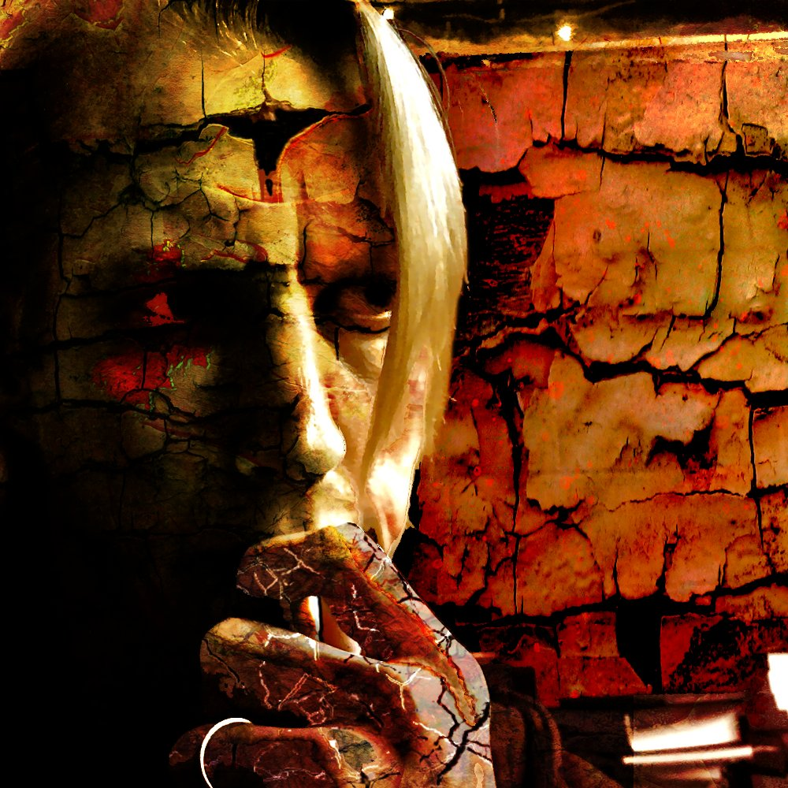
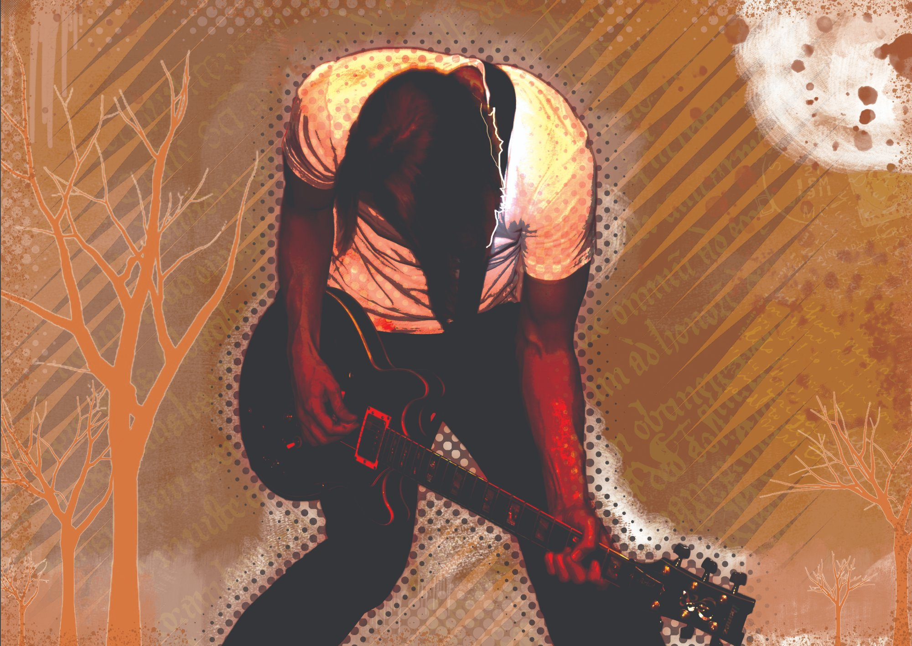

as Dedalus

The Story So Far
Open some doors. This collection of over two decades' worth of material is the roadmap that makes up the Dedalus project — a path with many turns and several routes — and no clear destination aside from experiencing creative discovery. The journey is without maps.
An Iowa native, Joe Wilford spent over fifteen years discovering and then redefining his sound in the competitive urban club scene of New York City's Lower East Side. A raconteur-de-force with a 12-string guitar, he took part in a wide range of musical projects — The Poetry Revolution, Logic Downwards, and most notably the Trailside Rangers — frequently playing well-known venues such as CBGB's, Rodeo Bar, and The Continental among others in the tri-state area.
Despite critical acclaim, three independent releases, and generous amounts of college-radio airplay nationwide as well as abroad, the Rangers were never able to take their indie status to the next level, and after eight years, disbanded peacefully in 1999 to pursue other musical avenues.
Ultimately, Wilford found himself back in the heartland, amidst the vibrant music scene of Eastern Iowa, where he continues writing, recording, and experimenting with a range of genres spanning acoustic rock, metal dirges and gypsy flamenco guitar instrumentals to ambient electronica infused with dub-step beats and darkwave tones, amongst a flurry of cinematic soundscapes.
The 2012 release Invocation taps into the latter — experimenting with synth-based sonically ambient themes. From Cormac McCarthy's The Road to Moby Dick, Alan Moore's Watchmen and Baum's Wizard of Oz — the layers of sonic and literary texture run deep.
Wild Angels (2010) cuts a more straightforward path but no less tortured — a ten-track collection of smoldering soliloquies, fraught with abstract gloom and apocalyptic drones. The lyrics invoke seething unrest and yet remain radiant in their ability to define the beautiful within the bitterly cruel.
Santiago (2007) is an experiment in gypsy flamenco with a twist of Americana. The 2004 release A Portrait of the Artist — nine songs serving as personal tributes to Tom Gallison, Wilford's long-time friend who tragically passed in February 2000 — echoes sadness and loss but also celebrates the creative spirit.
The dream and the bliss that resides within the soul is the flame that inspires the search. Welcome.